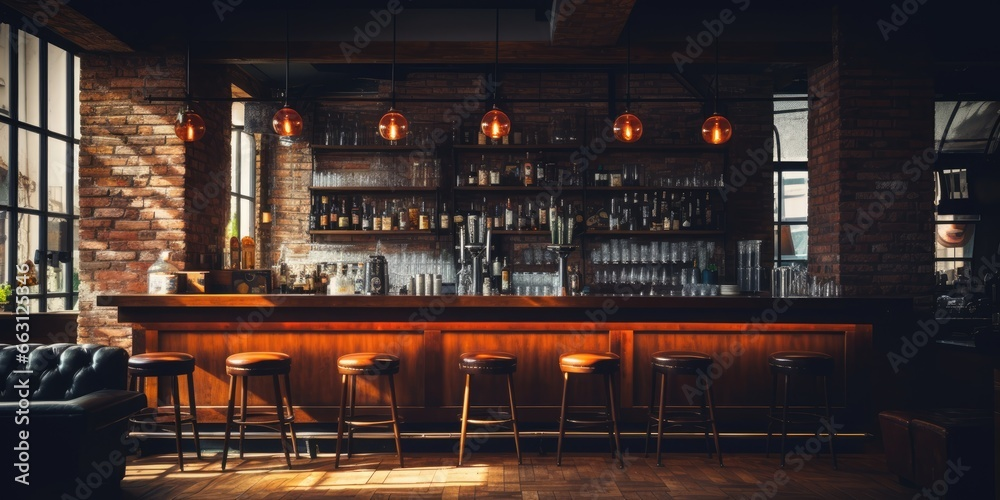
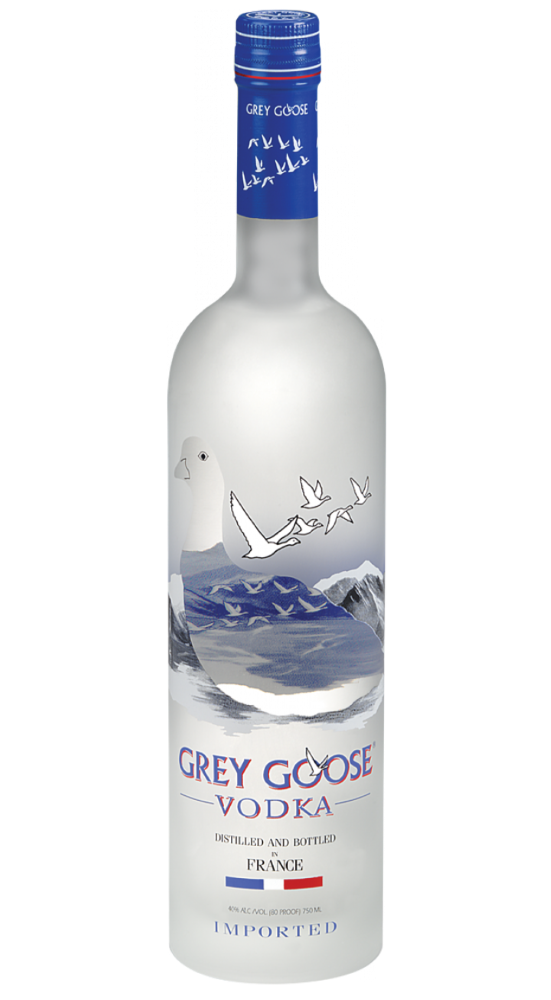
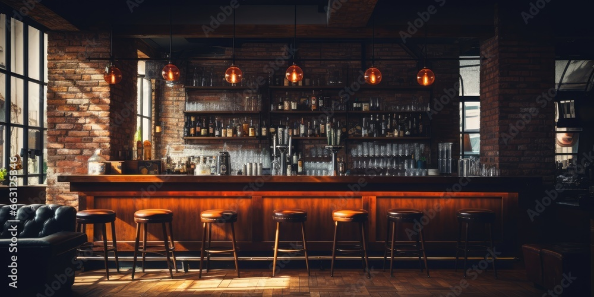
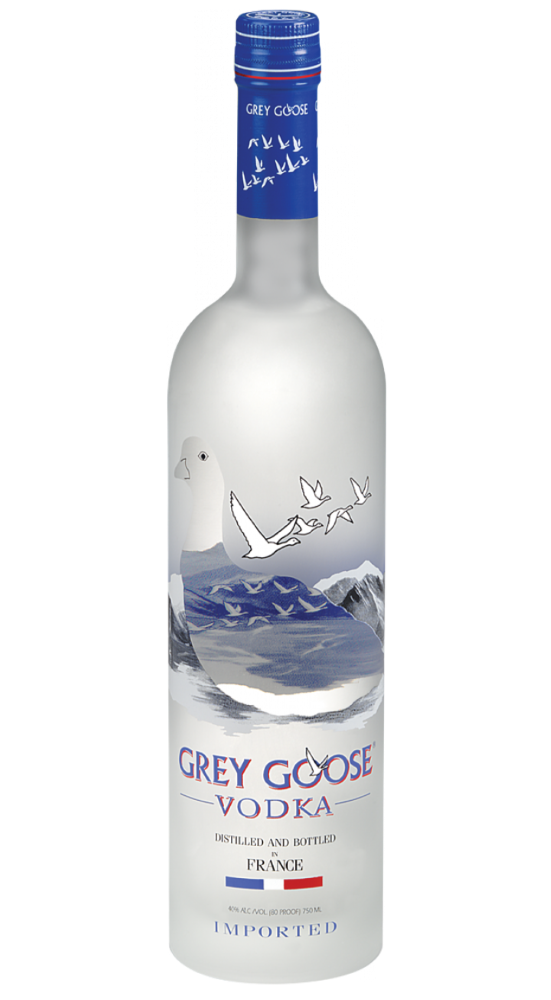

Barman
Ik ben barman bij restaurant Dunes in Almere Duin.
Ik vind dit leuk om te doen, omdat ik graag de mooiste en lekkerste drankjes maak.
Het klantcontact is fijn en mijn rol word gewaardeerd.
In mijn vrije tijd maak ik ook graag drankjes voor mezelf en vrienden.
 


